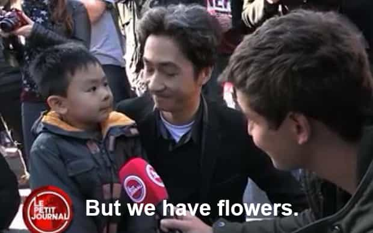

< < < Back
80+ Killed In New French Attack, Police Don’t Want Video Uploads To Compromise Narrative – Return Of Kings
Only days after the French intelligence services were ridiculed for their systemic unpreparedness before the savage Bataclan murders of late last year, police are urging people not to post images of an Islamist truck rampage in Nice. Some 75 people are dead from the attack, plus a hundred or more reported to be injured (update: at least 80 killed).
As the French celebrated the national holiday, Bastille Day, a large truck appeared to accelerate towards a massive crowd. Dozens and dozens were hit by the vehicle and it seems many more were injured in the resulting panic. The Islamist driver is said to have been shot dead by either police or security officials. Shockingly, there were occupants in the truck exchanging gunfire with these officials, indicating a thoroughly planned assault.
The National Gendarmerie is one of France’s two main police forces. Unlike the other, it is actually a paramilitary arm tasked with policing duties. Its Twitter account posted messages in French and English begging social media users not to disseminate photos and video footage of the very violent aftermath in Nice:

Although we can all sympathize with all the victims and their families, it is clear that France, a country housing Europe’s largest Muslim population, has been under attack from within for years. With the Bataclan attacks only having occurred months ago, it is high time that the French people properly see the existential threat they are facing–one that French police and paramilitary forces have been very unsuccessful in combating. What’s the bet that the driver and other occupants were also under police and intelligence service surveillance, just like the Bataclan killers?
The attackers are clearly trolling France, too. On the exact same day that these dozens have died, the French President had planned to end “emergency security measures.” We have an unambiguous demonstration that Islamist terrorists are exercising a free hand when it comes to demoralizing and butchering the French people.
You must watch and spread this video and any others like it
Want to help the Western world and help prevent attacks like this in the future? Then spread this video and all like it. It is time that the anger and awareness of Western peoples reached fever pitch. There is no point being constantly insulated from the violent truth, especially when tens of millions of people indulge in Game of Thrones and The Walking Dead, watch horror films, and play video games where players maim and kill others.
The video above and the suffering and death in it is what years of obscenely self-hating immigration policies, plus the inaction and political correctness of the security services meant to defend people, have wrought upon France. Using the leftist logic of peace and harmony, France should be the last place in Europe to be attacked by Islamists. It has by far the largest immigrant or recent immigrant Muslim population in Europe, both in terms of percentages and raw numbers. Yet it is still attacked! Meanwhile, basically Muslim-less or far less Muslim societies like Korea, Japan, Poland, and Ireland have none of this violence, violence which makes the Northern Ireland Catholic-Protestant conflict look like a children’s tea party.
For years, France has turned the other way. In the interests of promoting “national solidarity,” many important questions about race, ethnic identity and religion are not even asked by authorities collecting census data. “We’re all the same!” is the quip made by every mainstream French politician scared for either their job or personal safety if they ever speak out. It has not worked and the blood is really on the hands of those who have ignored the problem for so long.
France recently voted not to clean itself up by rejecting the French National Front

France, other Western countries and the media did not want to ask the hard questions or deal with the difficult issues after the Bataclan murders. So they focused on how little boys and their daddies with flowers could make love and peace prosper.
Whether they realized it or not, every person who voted for leftwing parties in recent French elections, and even the “center-right” UMP, voted for the continuation of terror attacks. Every other competitive party but the National French have shown no interest in tackling the immigration disaster that is fueling terrorist attacks, ethnic minority crime and overall cultural capitulation from Paris to Nice. The Socialists and UMP were so scared of the National Front that they even banded together to make sure it did not succeed. That said, the main blame can be attributed to French voters themselves, who were too interested in idealized and fake happy narratives than preventing more of the attacks and social disunity that otherwise make them weep and complain.
To borrow and slightly alter the title of former German Socialist politician Thilo Sarrazin’s book, France’s immigration policies and negligent attitude towards social and terrorist threats are effectively abolishing France itself. Asking people, like the National Gendarmerie has, to refrain from publishing proof of the ugly truth France faces will only accelerate this bloody and self-inflicted capitulation.
We owe it to the victims to fight for a West that does not kowtow to political correctness after the most savage terrorist attacks.
Read More: France Allows Large Muslim Population, Rewarded With Most Sophisticated Terrorist Attacks Since 9/11